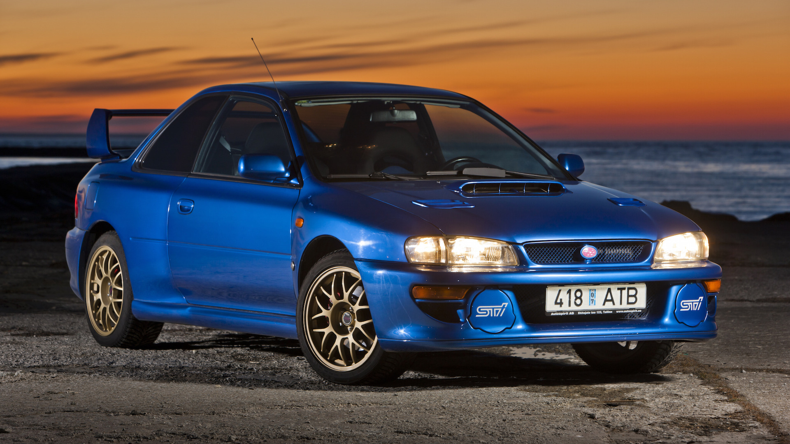

Top-ul Masinilor Japoneze in perioada 1990-2000
#1 Toyota Supra A80 1993-2002

A patra generație Supra folosește motoare 2JZ-GE (atmosferică, 225 CP) și 2JZ-GTE (turbo, 280 CP pentru Japonia și Europa). Cel mai puternic motor instalat 2JZ-GTE a produs 330 litri. a. Motorul 2JZ-GTE se pretează foarte bine la rafinări. Majoritatea modelelor au transmisii automate cu 4 trepte. Transmisia este reglată pentru călărie sportivă, iar întârzierile la comutare sunt minime. Cutii de viteze manuale sunt instalate cu 5 sau 6 trepte.
#2 Subaru WRX STI 1992-1998
Istoria acestui model începe încă din 1992, când Impreza a venit să înlocuiască Legacy Subaru în rally. Apoi, doi ani mai târziu, a fost introdus un sedan de la STI, care avea un accent sportiv mai accentuat, inclusiv un motor EJ207 de 280 CP. suspensie consolidată, sistem de frânare și multe alte îmbunătățiri. Au existat, de asemenea, un număr uriaș de versiuni speciale în Japonia și Europa. Lansarea lor a fost dedicată unor date importante și victoriilor triumfătoare la WRC. De exemplu, McRae, 555, Catalunya, Terzo, RB5, P1 și 22B.
#3 Mazda RX-7 1992-2002

A treia generație (FD) a fost introdusă în 1992. Singurul motor disponibil (13B-REW) a fost prima unitate de producție twin-turbo exportată din Japonia. Prima versiune a motorului a dezvoltat 265 CP. (pentru versiunea cu transmisie automată - 255 CP). În 1996, s-a efectuat un facelift, iar puterea motorului a fost ridicata la 280 de CP. În general, a treia generație a fost modificată de 5 ori: în 1993, 1995, 1996, 1998 și 1999. În plus, RX-7 a avut mai multe versiuni limitate. De exemplu, în 1992 a fost lansat un lot de 300 de mașini din seria RZ. Iar în 1994, a fost introdusă modificarea R-II, limitată la 350 de mașini. Puțin mai târziu, în 1997, au fost lansate 700 de mașini din seria RB Bathurst X, care aveau, printre altele, un interior exclusiv din piele roșie. În 1997, la a 30-a aniversare a modelului, a fost introdusă modificarea RS-R, care avea și o anumită limită de lansare.
#4 Honda / Acura NSX 1990-2005
Honda NSX este o mașină sportivă cu un motor fabricat de Honda din 1990 până în 2005. În America de Nord și Hong Kong s-a vândut sub brandul Acura. Motorul aveam cilindrii aranjați în forma literei V, 8000 de rotații pe minut și un indice de putere de neatins la acel moment pentru motoarele atmosferice. Pentru o aerodinamică mai bună, partea inferioară a mașinii era plană, iar forma din spate a caroseriei a contribuit la minimizarea separației roților de suprafață la viteze mari. Până în 1992, se știa că, datorită dispunerii motorului mijlociu, NSX avea tendința de a supraalimenta brusc în anumite condiții de manevră. În traficul ocupat cu viteze mici, acest lucru a fost rar văzut, dar ar putea apărea pe trasee de curse, unde viteze sunt mult mai mari. Opțional, instalația a fost dotată cu aer condiționat, un sistem stereo BOSE, ornarea consolei centrale și a panourilor ușilor din fibră de carbon, dar și din 1994 roți mari (16 "în față și 17" în spate), de culoarea în Chanshioship White. Producția acestui model s-a încheiat în septembrie 2005.
#5 Mitsubishi Lancer Evolution 1992-2015
Honda NSX este o mașină sportivă cu un motor fabricat de Honda din 1990 până în 2005. În America de Nord și Hong Kong s-a vândut sub brandul Acura. Motorul aveam cilindrii aranjați în forma literei V, 8000 de rotații pe minut și un indice de putere de neatins la acel moment pentru motoarele atmosferice. Pentru o aerodinamică mai bună, partea inferioară a mașinii era plană, iar forma din spate a caroseriei a contribuit la minimizarea separației roților de suprafață la viteze mari. Până în 1992, se știa că, datorită dispunerii motorului mijlociu, NSX avea tendința de a supraalimenta brusc în anumite condiții de manevră. În traficul ocupat cu viteze mici, acest lucru a fost rar văzut, dar ar putea apărea pe trasee de curse, unde viteze sunt mult mai mari. Opțional, instalația a fost dotată cu aer condiționat, un sistem stereo BOSE, ornarea consolei centrale și a panourilor ușilor din fibră de carbon, dar și din 1994 roți mari (16 "în față și 17" în spate), de culoarea în Chanshioship White. Producția acestui model s-a încheiat în septembrie 2005.
#6 Honda Civic 1972-până în prezent
În 1996, Honda Civic a devenit prima mașină de producție care a îndeplinit cerințele de mediu foarte stricte ale vehiculului LEV (Low Emission Vehicle). Honda Civic în generația a șasea a apărut în cinci moduri: universal-ul Aero Deck, hatchback cu trei sau cinci uși, coupe, sedan. Producția a fost stabilită în trei țări: Japonia (hatchback-uri cu trei uși și sedane), Anglia (hatchback-uri cu cinci uși și universal-uri) și SUA (coupe).
#7 Nissan Skyline GT-R 1989-2002

Legendarul autoturism a reapărut în septembrie 1998 având șasiu modificat. Noua generație a devenit puțin mai scurtă decât cea anterioară, iar osia din față a devenit mai aproape de partea din față. Capacele ventilelor au fost vopsite în roșu strălucitor, în loc de negru, care le-a fost aplicat în generațiile anterioare. Turbocompresoarele au fost, de asemenea, îmbunătățite. În special pentru această mașină, a fost proiectată o cutie de viteze mai puternică GETRAG cu 6 trepte. În timpul producției celei de-a cincea generații GT-R, Nissan a început să dezvolte o versiune numită N1, care a fost lansată anterior și la modelele R32 și R33 și, din punct de vedere tehnic, a fost similară cu predecesorii săi. Pe N1 nu era: aer condiționat, sistem stereo. În total, au fost produse doar 45 de mașini, dintre care 12 au fost folosite de Nismo (Nissan Motorsport) pentru a participa la campionatele de curse Super Taikyu. Majoritatea mașinilor rămase au fost vândute echipelor de curse și companiilor de tuning.